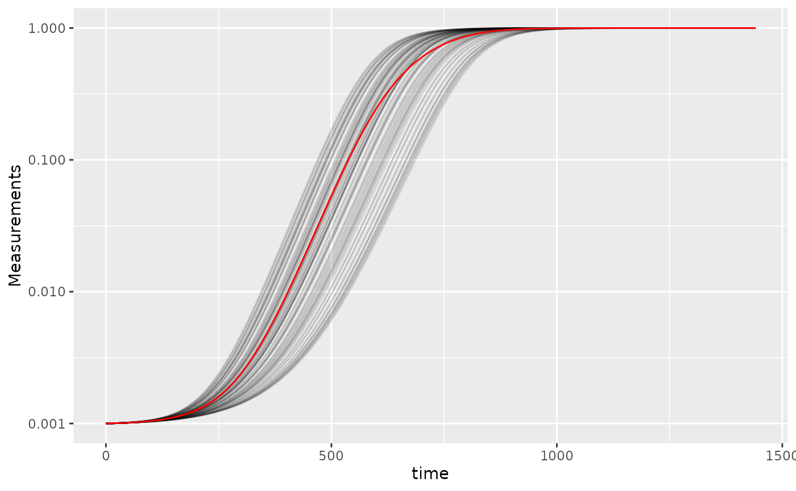
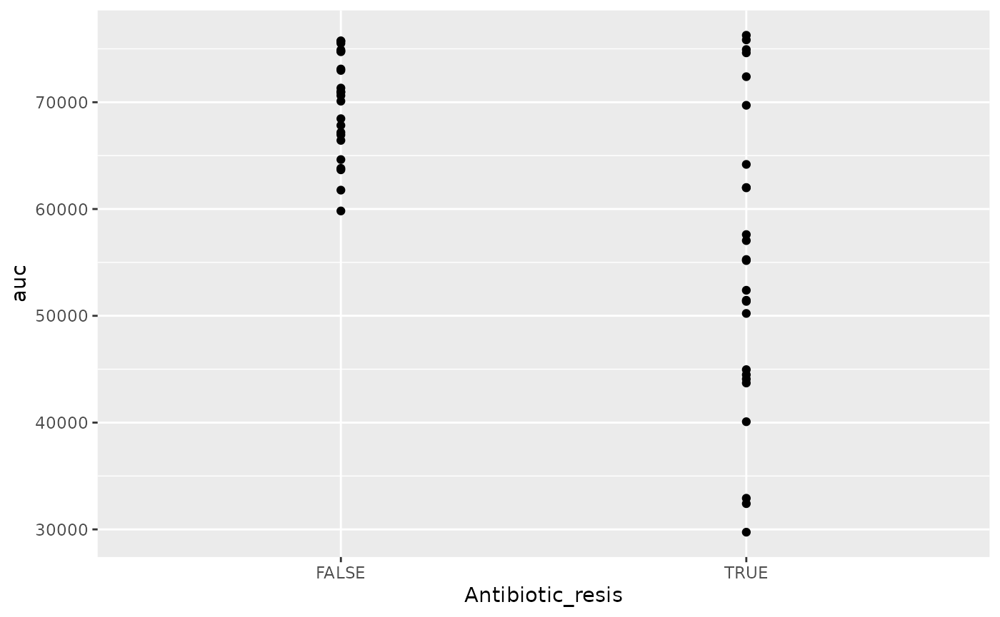

Statistics, merging other data, and other resources
Mike Blazanin
Source:vignettes/conclusion.Rmd
conclusion.RmdWhere are we so far?
- Introduction:
vignette("gcplyr") - Importing and transforming data:
vignette("import_transform") - Incorporating design information:
vignette("incorporate_designs") - Pre-processing and plotting your data:
vignette("preprocess_plot") - Processing your data:
vignette("process") - Analyzing your data:
vignette("analyze") - Dealing with noise:
vignette("noise") -
Statistics, merging other data, and other
resources:
vignette("conclusion")
So far, we’ve imported and transformed our measures, combined them with our design information, pre-processed, processed, plotted, and analyzed our data. The only things left are a few notes on best practices for running statistics, merging growth curve analyses with other data, and additional resources for analyzing growth curves.
If you haven’t already, load the necessary packages.
library(gcplyr)
#> ##
#> ## gcplyr (Version 1.4.0, Build Date: 2023-03-17)
#> ## See http://github.com/mikeblazanin/gcplyr for additional documentation
#> ## Please cite software as:
#> ## Blazanin, Michael. 2023. 'gcplyr: manipulate and analyze growth
#> ## curve data.' R package version 1.4.0
#> ##
library(dplyr)
#>
#> Attaching package: 'dplyr'
#> The following objects are masked from 'package:stats':
#>
#> filter, lag
#> The following objects are masked from 'package:base':
#>
#> intersect, setdiff, setequal, union
library(ggplot2)
# This code was previously explained
# Here we're re-running it so it's available for us to work with
example_tidydata <- trans_wide_to_tidy(example_widedata_noiseless,
id_cols = "Time")
example_design <- make_design(
pattern_split = ",", nrows = 8, ncols = 12,
"Bacteria_strain" = make_designpattern(
values = paste("Strain", 1:48),
rows = 1:8, cols = 1:6, pattern = 1:48, byrow = TRUE),
"Bacteria_strain" = make_designpattern(
values = paste("Strain", 1:48),
rows = 1:8, cols = 7:12, pattern = 1:48, byrow = TRUE),
"Phage" = make_designpattern(
values = c("No Phage"), rows = 1:8, cols = 1:6, pattern = "1"),
"Phage" = make_designpattern(
values = c("Phage Added"), rows = 1:8, cols = 7:12, pattern = "1"))
ex_dat_mrg <- merge_dfs(example_tidydata, example_design)
#> Joining with `by = join_by(Well)`
ex_dat_mrg$Well <-
factor(ex_dat_mrg$Well,
levels = paste(rep(LETTERS[1:8], each = 12), 1:12, sep = ""))
ex_dat_mrg <- group_by(ex_dat_mrg, Well, Bacteria_strain, Phage)
ex_dat_mrg <-
mutate(ex_dat_mrg,
smoothed_med3 =
smooth_data(x = Time, y = Measurements,
sm_method = "moving-median", window_width_n = 3),
# Note that for the second round, we're using the
# first smoothing as the input y
smoothed =
smooth_data(x = Time, y = smoothed_med3,
sm_method = "moving-average", window_width_n = 3))Statistical analyses of growth curves data
At this point, we’ve now summarized our growth curves data into some metrics. How can we best go about drawing statistical conclusions from these data?
When should we average replicates?
Before we dig into what we to do next, I want to emphasize something we did not do in this workflow: averaging different wells together before summarization. In my opinion, averaging should only occur after summarization, not before. Why? Even wells that have the same contents (i.e. are technical replicates) can still differ in their growth due to biological variation (e.g. stochastic growth dynamics). If we average our density values at the beginning, we may introduce bias and we will not have the ability to visualize or assess the biological variation present in our data.
Let’s look at a simple example to demonstrate this point. I’m going to simulate bacterial growth using the Baranyi-Roberts mathematical model of growth, which is logistic growth but with a period of acclimation at the beginning:
\[\frac{dN}{dt} = \frac{q_{0}}{q_{0} + e^{-mt}} * r N\left(1-\frac{N}{k}\right)\]
Where \(N\) is the population size, \(q_{0}\) is a parameter controlling the initial acclimatization state of the population, \(m\) is the rate of acclimation, \(r\) is the rate of growth, and \(k\) is the carrying capacity of the population.
In the code below, I simulate the growth of 96 different wells of bacteria. All the bacteria are identical, except that they differ in the rate at which they acclimate.
# Define the function that calculates density according to Baranyi-Roberts eq
baranyi_gr <- function(r, k, q0, m, init_dens, times) {
# Note: these eqs are the integral of the dN/dt eq in the text above
# Acclimation function
a <- times + 1/m*log((exp(-m*times)+q0)/(1+q0))
# Density function
return(k/(1-(1-(k/init_dens))*exp(-r*a)))
}
# Set up our wide-shaped data frame
times <- seq(from = 0, to = 24*60, by = 15)
sim_dat <- as.data.frame(matrix(NA, nrow = length(times), ncol = 98))
sim_dat[, 1] <- times
colnames(sim_dat) <- c("time", "averaged", paste("Well", 1:96, sep = ""))
# Simulate growth
for (i in 3:ncol(sim_dat)) {
sim_dat[, i] <- baranyi_gr(times = sim_dat$time,
r = 0.02, k = 1, q0 = 0.01,
m = runif(1, min = 0.01, max = 0.02),
#m = rgamma(n = 1, shape = 2, scale = 0.02/2),
init_dens = 0.001)
}
# Calculate the "average well"
sim_dat[, "averaged"] <- rowMeans(sim_dat[, 3:ncol(sim_dat)])
# Transform to tidy and calculate per-capita growth rate
sim_dat_tdy <- trans_wide_to_tidy(sim_dat, id_cols = "time")
sim_dat_tdy <- mutate(group_by(sim_dat_tdy, Well),
percap_deriv = calc_deriv(y = Measurements, x = time,
percapita = TRUE, blank = 0))
# Plot the growth in our wells
ggplot(data = filter(sim_dat_tdy, Well != "averaged"),
aes(x = time, y = Measurements, group = Well)) +
geom_line(alpha = 0.1) +
geom_line(data = filter(sim_dat_tdy, Well == "averaged"), color = "red") +
scale_y_continuous(trans = "log10")
Here we’ve plotted each individual well in black, with the “average well” plotted in red. We can clearly see that our different wells are varying in how quickly they’re acclimating. Our average well appears to reflect the data pretty well, does it give a good measure for our average maximum per-capita growth rate?
# Summarize our data
sim_dat_sum <- summarize(group_by(sim_dat_tdy, Well),
max_growth_rate = max(percap_deriv, na.rm = TRUE))
# Plot the maximum per-capita growth rates of each well
# Add a red line for the max growth rate of the "average well"
# Add a dashed line for the average growth rate of all the wells
ggplot(data = filter(sim_dat_sum, Well != "averaged"),
aes(x = max_growth_rate)) +
geom_histogram() +
geom_vline(data = filter(sim_dat_sum, Well == "averaged"),
aes(xintercept = max_growth_rate), color = "red") +
geom_vline(xintercept =
mean(filter(sim_dat_sum, Well != "averaged")$max_growth_rate),
lty = 2)
#> `stat_bin()` using `bins = 30`. Pick better value with `binwidth`.
Here we can see that the maximum growth rate of the “average well” (red line) is not the same as the true average maximum growth rate of all the wells (dashed line). While this bias might seem small, it is in fact very consistent: if you ran this simulation many more times, the “average well” growth rate would nearly always be lower than the true average growth rate. Moreover, this bias extends to many other statistics as well.
Thus, I recommend against averaging wells together before summarizing, since it often introduces bias and eliminates our ability to visualize variation between replicates.
Carrying out statistical testing
How do you go about running statistics on analyzed growth curve data? Typically, growth curves experiments will have a highly nested structure. You probably have multiple wells with the same contents (i.e. technical replicates) in each plate. You may also have multiple plates from different runs (creating the possibility of batch effects).
In order to pull apart these effects and test for differences between your treatments, you’ll likely need to do mixed-effects modeling. Unfortunately, it’s beyond the scope of this vignette to provide a sufficient explanation of how to do mixed-effects statistics. However, I can provide some guidance:
For frequentist statistics, the R package
lme4 is one of the most-popular implementations of
mixed-effects modeling.
For Bayesian statistics, the R packages
brms or rstanarm are popular implementations
that can incorporate mixed-effects modeling.
Regardless of your approach, you should:
- use your your summarized statistics (e.g.
auc,max_growth_rate,lag_time, etc.) as your response variable - use your design elements (e.g.
Bacteria_strain,Phage) as your explanatory variables (i.e. fixed effects) - incorporate random effects for any technical replicates you have
- incorporate random effects for any potential batch effects in-play
There are a number of excellent resources out there to learn how to do this sort of mixed-effects modeling, including what I think is a good introductory guide to the process by Michael Clark.
Combining growth curves data with other data
As you approach the end of your growth curves analyses, you have
summarized the dynamics of your growth curves into one or a few metrics.
At this point, you may wish to pull in other sources of data to compare
to your growth curves metrics. Just like merging multiple growth curves
data frames together, this can be achieved with
merge_dfs.
We’ll focus on the area-under-the-curve metric, and on just the bacteria grown in the absence of phages.
ex_dat_mrg_sum <-
summarize(dplyr::filter(ex_dat_mrg, Phage == "No Phage"),
auc = auc(x = Time, y = smoothed))
#> `summarise()` has grouped output by 'Well', 'Bacteria_strain'. You can override
#> using the `.groups` argument.Imagine that, separately, we’ve measured the resistance of each of
our example bacteria to antibiotics, and we want to know if there’s any
relationship between the antibiotic resistance of the bacteria and their
growth. Here we’ll generate some mock antibiotic resistance data.
Importantly, our data must have matching headers as our growth curve
data so that merge_dfs knows how to merge the
data.frame’s. We’ll put whether or not the strain is
resistant to the antibiotic under the Antibiotic_resis
column, with a TRUE for resistance, and FALSE for sensitivity.
Don’t worry exactly how this code works, since it’s
just simulating data that you would have collected in the lab.
set.seed(123)
antibiotic_dat <-
data.frame(Bacteria_strain = paste("Strain", 1:48),
Antibiotic_resis =
ex_dat_mrg_sum$auc[
match(paste("Strain", 1:48),
ex_dat_mrg_sum$Bacteria_strain)] *
runif(48, 0.5, 1.5) < mean(ex_dat_mrg_sum$auc))
head(antibiotic_dat)
#> Bacteria_strain Antibiotic_resis
#> 1 Strain 1 TRUE
#> 2 Strain 2 FALSE
#> 3 Strain 3 TRUE
#> 4 Strain 4 FALSE
#> 5 Strain 5 FALSE
#> 6 Strain 6 TRUEGreat, now we merge our two data frames and see if there’s a relationship.
growth_and_antibiotics <-
merge_dfs(ex_dat_mrg_sum, antibiotic_dat)
#> Joining with `by = join_by(Bacteria_strain)`
head(growth_and_antibiotics)
#> # A tibble: 6 × 5
#> # Groups: Well, Bacteria_strain [6]
#> Well Bacteria_strain Phage auc Antibiotic_resis
#> <fct> <chr> <chr> <dbl> <lgl>
#> 1 A1 Strain 1 No Phage 55172. TRUE
#> 2 A2 Strain 2 No Phage 67181. FALSE
#> 3 A3 Strain 3 No Phage 52392 TRUE
#> 4 A4 Strain 4 No Phage 70101. FALSE
#> 5 A5 Strain 5 No Phage 70932. FALSE
#> 6 A6 Strain 6 No Phage 44079. TRUE
ggplot(data = growth_and_antibiotics,
aes(x = Antibiotic_resis, y = auc)) +
geom_point()
There is! We can see that the antibiotic resistant strains
(TRUE) have a smaller area-under-the-curve than the
antibiotic sensitive strains (FALSE) (although, to be fair,
I did simulate the data so we’d get that result).
Other growth curve analysis packages
A number of other R packages besides gcplyr
facilitate analysis of growth curves data.
There are, broadly speaking, two ways to analyze growth curves data:
- directly quantify attributes of the growth dynamics
- fit the growth dynamics with a mathematical model, then extract parameters from the fitted model
While gcplyr focuses on manipulation of growth curves
data and the first analysis approach (direct quantification of growth
curves dynamics), many other R packages focus on fitting
growth dynamics with a mathematical model.
Generally, fitting growth dynamics with a model has greater power to accurately quantify the underlying traits. However, it also takes much more effort to be rigorous when fitting data with a model. You have to carefully choose a model whose assumptions your data meet. You also have to evaluate the fits to ensure that the optimization algorithms arrived on reasonable solutions.
A number of R packages implement fitting-style
approaches, which I list here for readers to explore on their own. At
some point in the future, I hope to incorporate more direct examples of
how to use tidy-shaped data imported and manipulated by
gcplyr with these packages.
growthcurverQurvE-
AUDIT(includinggrowrandmtpview1) growthratesdrcopmgrofitR-BiologgrowthmodelscellGrowthgrofitGCATCarboLogRbiogrowth
Additionally, one R package doesn’t implement
fitting-style approaches, but does contain useful functionality for
plate-reader data analysis:
plater
What’s next?
You’ve finished all the documentation. Congratulations!
gcplyr is a powerful framework to build additional analyses
on, since the data is nicely organized. Feel free to reach out to me
with any questions, comments, or concerns you might have. I’d love to
continue making gcplyr as useful for others in the
scientific community as it has been for me. You can reach me at
mikeblazanin [at] gmail [dot] com.
- Introduction:
vignette("gcplyr") - Importing and transforming data:
vignette("import_transform") - Incorporating design information:
vignette("incorporate_designs") - Pre-processing and plotting your data:
vignette("preprocess_plot") - Processing your data:
vignette("process") - Analyzing your data:
vignette("analyze") - Dealing with noise:
vignette("noise") - Statistics, merging other data, and other resources:
vignette("conclusion")